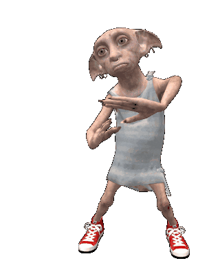
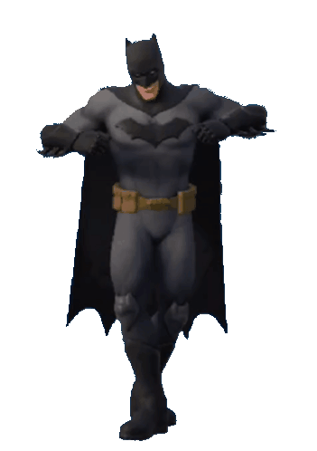
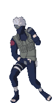

Lo primero que hice al tener vacaciones fue tomar una larga siesta y despertarme en la noche para comenzar con mi vida poco convencional, es decir, no dormir de acuerdo con el horario ya preestablecido. Me propuse dañar mi horario de sueño comenzando por dormir luego de ver Harry Potter —spoiler: me dormí— y despertándome para comer y beber.

A partir de ese momento, mi rutina comenzó a cambiar de forma progresiva hasta volverse completamente distinta a la que normalmente llevo durante días de estudio. Lo que antes para mi era algo imposible —aunque lo hacia de igual manera—, durante esa semana fue realidad.
Puedo decir que amo la noche, ya que es el momento que me transmite más tranquilidad por el simple hecho de que la mayoría de los seres humanos normales descansan —obviamente yo no—; y pues tomo ese tiempo para dedicarlo a cosas productivas y no productivas para mí. Ya saben, la ciudad gótica no se va a salvar sola...

Como mencioné anteriormente, la noche es mi tiempo libre, y con ese tiempo libre hice muchas cosas durante el inicio de Semana Santa. Primero, busqué todo tipo de manualidades en Pinterest en nombre de los tiempos productivos; una de las cosas que hice fue una rosa de regalo que no había terminado, porque para que las cosas te salgan bien exageradamente hermosas y demasiado deslumbrantes, tienes que darles tiempo de manera progresiva —sí, cómo no—; y pues, la terminé y la entregué.
También elaboré cuidadosamente un sombrero de cartas con un mazo que tenía por ahí arrimado; busqué tutoriales en cierta app roja llamada YouTube y encontré un video de unos 7 años —no recuerdo bien—. El caso es que la chica del tutorial era un completo arcoíris —de grande quiero ser como ella—, y pues ella procedió a utilizar una cinta adhesiva —cosa que no tenía— y las cartas, solo con eso; pero como yo soy pobre y acomplejada, utilicé barras de silicón, cartulina blanca, silicón frío y una hoja de un taller que se le había perdido a Janiel.
El proceso fue fácil si lo comparamos con una clase de cierta materia por ahí —MATEMÁTICAS, I HATE YOU—. Bueno, ahora narro el proceso.
Primero, reemplacé el método de la cinta por cartulina blanca, ya que no tenía una a mano —y eran las nueve de la noche... ¿o las diez? I don’t remember— y pegué las cartas de manera vertical en una cinta colocada en horizontal —si no se entendió, pues I don’t really care—.
Luego de hacerlo dos veces y dejar que se secara, simplemente pegué los extremos y quedaron dos círculos. Estos dos círculos los coloqué uno encima de otro, asegurándolo con silicón caliente. Después, me perdí en el sendero de la vida —Honestly, I’m tired of writing about how I made the hat— porque un gato negro se cruzó en mi camino y tuve que irme por el camino más largo, ya que eso indica mala suerte —tuve un viaje astral—; lo recuerdo porque mi cerebro lo archivó.

Al final, sí quedó, y frecuentemente lo utilizo, de una forma u otra, para irme de paseo a una realidad alterna.